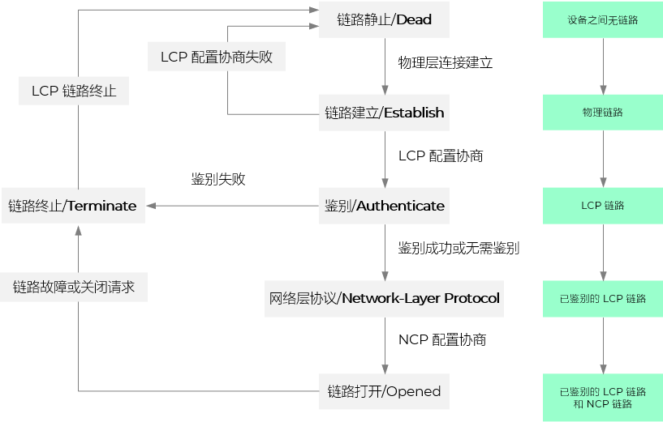
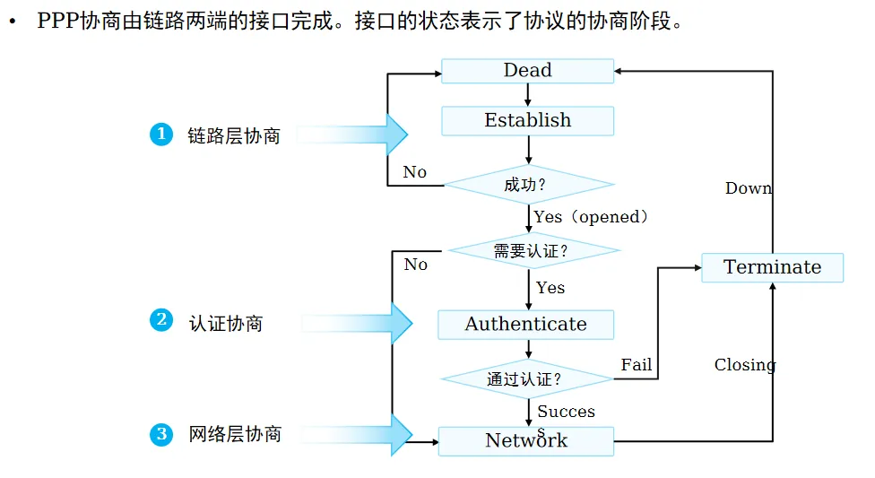

点对点协议
@PPP- PPP，Point-to-Point Protocol
- 数据链路层的通信协议
- 可用于
异步传输 Asynchronous：如电话拨号上网 (POTS)、Modem连接、临时性访问
同步传输 Synchronous：租用专线、LAN-to-LAN互联、SDH/SONET高速链路
- PPPoE，PPP over Ethernet
- 在以太网上跑 PPP
- 把 PPP 帧封装进以太网帧里
- 用户经 ISP（Internet Service Provider）接入互联网
- 宽带运营商能在以太网/DSL/光纤等环境中对用户做拨号认证和会话管理
- 广域网 WAN 之间的专有链路
- 虚拟私有网络 VPN 之间的通信链路
- 早期的宽带入户
- 客户端是终端设备：每台电脑（主机）都需要独立安装拨号软件（或操作系统自带拨号）进行 PPPoE 拨号
- 用户隔离：在接入网中，各个用户通常被隔离，各自建立独立的 PPPoE 会话
- 公网 IP：PPPoE Server 通常会为每个拨号成功的用户分配一个公网 IP（或运营商内网 IP）
- 家里如果装了电信、联通或移动的宽带，大概率依然是这种模式。光猫（Modem）桥接，你家里的路由器负责拨号（PPPoE Client），获取运营商分配的动态公网 IP（或大内网 IP）
- 客户端是路由器（网关）：内部的电脑（主机A、B）不需要拨号。它们通过 DHCP 获取内网 IP，通过 NAT（网络地址转换）共享路由器建立的这一条 PPPoE 连接上网
- 单条会话：整个企业网络通常只建立 1 个 PPPoE 会话（由路由器发起）
- 私有 IP：内部主机使用的是私有 IP（如 192.168.x.x），对外表现为路由器获取的那个公网 IP
- 协议特点 Feature
- 简单
发的帧经过 CRC 校验，正确，则接受；反之丢弃
不需要纠错：由传输层实现
不需要流量控制：由传输层实现
不需要帧序号
仅支持点对点链路，不支持点到多点链路
仅支持全双工链路，不支持单工和半双工链路
- 封装成帧
便于从比特流中找到帧的开始和结束
- 透明
发什么传什么
即使发帧界定符，也可以正常接收
- 差错检测
尽早消除错误；避免后续继续传播，占用网络资源
检错==纠错？
- 其它
多种网络协议
多种类型链路
检测连接状态
最大传输单元 MTU - 数据部分
网络地址协商
数据压缩协商
点对点链路协议


PPP帧格式 Format
- 头部 Header
- 数据 Data
- 尾部 Tail
- 标志字段 F，Flag
- 说明：PPP帧界定符；标记一个PPP帧的开始和结束
- 大小：1 Byte
- 值：0x7E；0111 1110
- Each frame begins and ends with a Flag Sequence, which is the binary sequence 01111110 (hexadecimal 0x7e). All implementations continuously check for this flag, which is used for frame synchronization.
- 地址字段 A，Address
- 说明：没有指定；不携带信息
- 大小：1 Byte
- 值：0xFF；11111111；表示全部对象
- The Address field is a single octet, which contains the binary sequence 11111111 (hexadecimal 0xff), the All-Stations address. Individual station addresses are not assigned. The All-Stations address MUST always be recognized and received.
- The use of other address lengths and values may be defined at a later time, or by prior agreement. Frames with unrecognized Addresses SHOULD be silently discarded..（不处理、不响应、不报错）
- 控制字段 C，Control
- 说明：没有指定；不携带信息
- 大小：1 Byte
- 值：0x03；0000 0011
- The Control field is a single octet, which contains the binary sequence 00000011 (hexadecimal 0x03), the Unnumbered Information (UI) command with the Poll/Final (P/F) bit set to zero.（只有两个对等的设备，没有主站和从站之分）
- The use of other Control field values may be defined at a later time, or by prior agreement. Frames with unrecognized Control field values SHOULD be silently discarded.
- 协议字段 Protocol
- 大小：2 Byte
- 说明：数据部分向上交付给哪个（网络层）协议处理
- 值：
0x0021 IP数据报
0xC021 链路控制协议
0x8021 网络层控制数据
- 数据部分 Information/Data
- 说明：大小不超过 1500 Bytes
- 如果长度不够，需要填充额外数量的字节直至到 MRU，以保证帧的最小长度或满足硬件处理要求，由实现者决定
- The Information field is zero or more octets. The Information field contains the datagram for the protocol specified in the Protocol field.
- The maximum length for the Information field, including Padding, but not including the Protocol field, is termed the Maximum Receive Unit (MRU), which defaults to 1500 octets. By negotiation, consenting PPP implementations may use other values for the MRU.
- 帧校验序列 FCS
- 说明：地址字段 A、控制字段 C、协议字段 P 以及信息/数据字段 DATA（包括数据中可能的填充字段 Padding）
- 大小：2 Bytes
- The FCS field is calculated over all bits of the Address, Control, Protocol, Information and Padding fields, not including any start and stop bits (asynchronous) nor any bits (synchronous) or octets (asynchronous or synchronous) inserted for transparency. This also does not include the Flag Sequences nor the FCS field itself.
- Part1 发送：链路层向物理层交付。
- 从网络层收到数据
- 填写协议字段，组装帧头（Address + Control + Protocol）
- 添加信息和必要的填充 Information + Padding
- 计算 CRC，附加 FCS，得到不含标记位的PPP帧
- 透明处理( 可以先透明化处理再 CRC 吗)
- 在转义后的帧的头尾分别添加 Flag (0x7E)
- 交给物理层发送
- 物理层拿到完整的 PPP 帧的比特串，逐 bit 发送出去；PPP帧各协议字段对物理层是透明的，不起任何作用
- Part2 接收：链路层向网络层交付
- 接收端物理层把比特流收上来，还原成 PPP 帧后，交给数据链路层处理
- 帧定界
找到标志字段 0x7E，确定帧的起始和结束
- 透明化处理
- CRC 校验（FCS）
计算接收到的帧（地址字段 A + 控制字段 C + 协议字段 Protocol + 信息字段含必要的填充）的 CRC
若错误（余数 ≠ 0） → 直接丢弃，不向上交付
- 解析协议字段（关键！）
校验通过后（余数 = 0），链路层读取协议字段的值
根据这个值，决定把信息字段交给网络层的哪个协议实体

Only one Flag Sequence is required between two frames. Two consecutive Flag Sequences constitute an empty frame, which is silently discarded, and not counted as a FCS error.
地址字段 A、控制字段 C 和协议字段 Protocol又称为帧头
MRU：最大接收单元；链路层的术语；接收方定的规矩；我这边的卸货口有多大，能接收多大的箱子
MTU：最大传输单元；网络层的术语；发送方根据对方卸货口（MRU）和自己的包装能力综合考虑后，决定的实际装货大小
分拣（帧定界），验货（CRC），拆包（读协议字段），送货（交付网络层）
透明传输 Transparency
- 无论上层交下来的数据是什么（哪怕是刚好长得像帧头/帧尾的控制字符），数据链路层都能原封不动地传过去，接收方不会误判
- 实现透明传输的方法，取决于底层物理线路是同步还是异步
- 当 PPP 运行在不同物理特性的线路上时，为了确保透明传输，就必须采用不同的处理方法
- 对于异步线路 Asynchronous
有起止标记，可以随时停下来，按字符发
采用字节填充来解决数据中可能出现控制字符的问题
有的资料将字节解释为字符
- 对于同步线路 Synchronous
没有起止标记，必须依靠连续的数据流来维持时钟同步，只能按块发
采用零比特填充来防止数据中出现标志位序列
比特被分组为块，也有资料称同步传输的单位是帧
- 异步传输
- 使用字节填充 Octet-stuffed
- 使用转义符 0x7D（0111 1101）
- 通过开始和结束比特保证传输
- 情况1：出现帧定界符 0x7E，将其转变为2个字节：0x7D 和 0x5E
- 0x7E → 0x7D 0x5E
- 情况2：出现转义字符 0x7D，将其转变为2个字节：0x7D 和 0x5D
- 0x7D → 0x7D 0x5D
- 情况3：其它 ASCII控制字符（<0x20），在其前面加上 0x7D，同时 +20 调整该字符的编码
- 0x03 → 0x7D 0x23
- 自行验证
- 自行验证
- 同步传输
- 使用0比特填充 Bit-stuffed
- 发端：每发现连续5个1，就填充1个0（为什么是5个1就要填1个0）
- 收端：每发现连续5个1，就删除其后面的0
- 需要时钟信号保持同步
- 传输不间断
const getRank = async() => {
const res = await fetch('https://glplaman.github.io/utils/data/rank/202601.json')
const data = await res.json()
console.log(data);
}
getRank()

控制符的转义
在串口通信中经常被用作通信控制（例如：换行、回车、流控 XON/XOFF 等）
如果数据载荷中出现了这些控制字符，接收方的硬件或驱动可能会误以为这是通信控制指令，从而导致数据被截断或出错
为了保证数据链路层的透明传输（），必须把这些可能引起歧义的控制字符“伪装”起来，即转义
0x7E 是标志位
0x7E = (0111 1110)2
0x20 = (0010 0000)2
=(0101 1110)2 = 0x5E
∴ 转义后的数据 = 0x7D 0x5E

| 0 1 0 0 1 1 1 1 1 1 0 0 0 1 0 1 0 |
| 0 1 0 0 1 1 1 1 1 0 1 0 0 0 1 0 1 0 |
0x7E 这个标志位，在异步里是字节，在同步里是比特序列。它本身是通用的，只是防冲突（透明传输）的手段不同
无论底层是同步还是异步，PPP 帧都必须有这两个这个标志位。因为没有它们，接收方在连续的数据流中就找不到帧的头和尾
PPP 协议的工作状态 State
- PPP 协议主要包括
- 2个控制协议 Protocol
- 负责链路的建立配置和测试
- 负责网络层的管理
- 此外还有封帧的协议；同前面内容
- 5个阶段 Phase
- 链路静止 Link Dead
- 链路建立 Link Establishment Phase
- 鉴权 Authentication Phase
- 网络层协议 Network-Layer Protocol Phase
- 链路终止 Link Termination Phase
- 基本过程 Procedure
- 当用户家中的个人电脑通过光纤接入到ISP后，个人电脑就通过路由器向ISP发送一系列的链路控制协议LCP分组（封装成多个PPP帧），以便建立LCP连接
- 在选择了将要使用的一些PPP参数后，还要进行网络层配置，网络控制协议NCP给新接入的用户个人电脑分配一个临时的IP地址
- 当用户通信完毕时，NCP 释放网络层连接，收回原来分配出去的IP地址。LCP 释放数据链路层连接。最后释放的是物理层的连接


Summary & Homework
- Summary
- PPP 信道的应用
- PPP 的帧格式
- PPP 的透明传输
- PPP 的工作状态
- Homework
- 答：
- 答：
- 1. 发送端：每发5个1，插入1个0
- Protocol Reading
- The Point-to-Point Protocol (PPP)
- PPP in HDLC-like Framing
- A Method for Transmitting PPP Over Ethernet (PPPoE)
- Point-to-Point Protocol (PPP) Frame Format
- Point-to-Point Protocol (PPP)
- Transmission Modes in Data Transmission
- What is data transmission | Everything you need to know about it
- Asynchronous Transmission
- Synchronous Transmission
- Point To Point Network
- PPP Full Form
- 深入浅出计算机网络 - 3.3 点对点协议PPP
- PPP & PPPoE & L2TP & PPTP 一文全介绍
- PPPoE
- ASCII
还原填充字节
7D 5E → 7E
7D 5D → 7D
7D 5D → 7D
7D 5E → 7E
∴最后数据：7E FE 27 7D 7D 7E
Point-to-Point Protocol over Ethernet (PPPoE) is a network protocol that encapsulates Point-to-Point Protocol (PPP) frames within Ethernet frames. The encapsulation allows the transport of PPP sessions over Ethernet networks, enabling session management and user authentication in broadband access environments.
PPPoE combines the authentication, encryption, and compression functionalities of PPP with high-speed data transfer of Ethernet. It allows ISPs to manage individual customer connections on a shared network infrastructure.